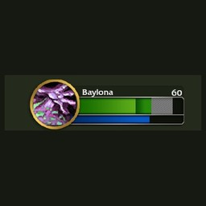

Unit frames · WoW: Forever
Deno Retail Frames
Puts the retail layout back on the game's own player and target frames: level number top right, name on the left, full-height health bar.
Forever's player, target and focus frames use the same art as retail, only laid out differently. This addon puts the retail layout back on the game's own frames:
What it does
Player frame
Name on the left, level number top right in gold, a full-height health bar and the round portrait ring of the target frame, mirrored.
Target and focus frames
Retail name, level and reputation strip positions, with the strip behind a player's name in their class colour.
Retail bar art
The bars fill edge to edge, without the gaps Forever's own fill art has.
White absorb shields
The game already shows incoming heals and shields on these frames; the shield is now white instead of blue.
Pictures

Install
- Download the zip from the latest release, or install it from CurseForge.
- Extract the
DenoRetailFramesfolder intoWorld of Warcraft\<Forever folder>\Interface\AddOns\. - Restart the game.